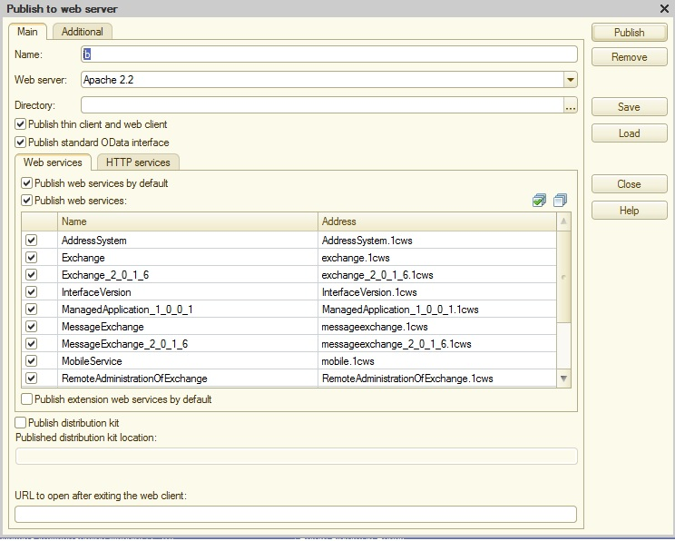

To determinate the parameters of connection to the Web service it is necessary to publish it. For this purpose in the Infobase Configurator in Publication on a Web Server window (the menu Administration/Publication on a Web server...) it is necessary to set publication parameters and to set checkboxes of the Web service use.

After that, you may check if it is possible to connect to Web service in browser.